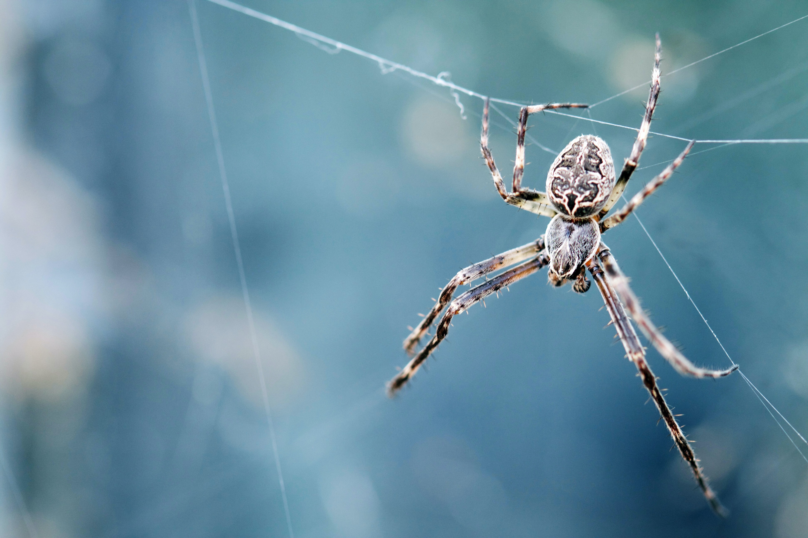

What Spiders do for Us
Spiders deliver many benefits to both our ecosystem and inside our homes. For example, spiders like to feast on pesky insects, like roaches, aphids, moths, and earwigs, which help keep their population in check. This also helps alleviate the spread of diseases and the destruction of our farmland crops.Spiders also help smaller-scale gardeners, especially those committed to staying organic. Rather than rely on chemicals for pest control, let spiders feast on moths, mites, aphids, weevils, and other bugs. Other creatures (like ladybugs and birds) also eat garden pests, but studies indicate that spiders are the best hunters.
A spiders venom isnt the only part of it that has the potential to heal. In ancient times, Greeks and Romans used spider webs to dress soldiers’ wounds. Why? Silk is protein-based, biocompatible, and doesn’t cause adverse reactions. Today, scientists are continuing to explore silk’s potential in wound care. In the UK, a team created synthetic spider silk “bandages” and added an antibiotic component.